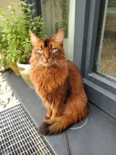

The Somali cat is a longhair with vibrant fur and an energetic personality. They are often compared to foxes, moving on tiptoe with tail high. They are very active and curious and always try and figure out puzzles and problems with their intelligence. They are rather fascinated by water unlike some other types of cats. They have a ticked coat with multiple bands of colors on each hair allowing their fur to shine in light.
